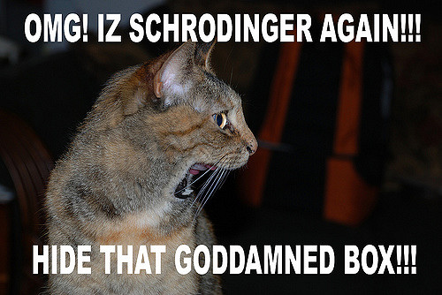

class: center, middle # Quantum Secret Santa by Brian --- # Outline 1. History and Related Work 2. Statement of the Problem 3. Quantum Superpositions 4. Solution 5. Future Work --- # History and Related Work  Vognovìc, 2004 --- # History and Related Work  Mauw et al, 2010 --- # Statement of the Problem  --- # Statement of the Problem 1. Relatives coming to visit 2. Assign secret santas ahead of time 3. Nobody in the same household should get each other --- # Quantum Superpositions  --- # Quantum Superpositions  Schrödinger's cat: a cat, a flask of poison, and a radioactive source are placed in a sealed box. If an internal monitor detects radioactivity (i.e., a single atom decaying), the flask is shattered, releasing the poison that kills the cat. The Copenhagen interpretation of quantum mechanics implies that after a while, the cat is <b>simultaneously alive and dead</b>. Yet, when one looks in the box, one sees the cat either alive or dead, not both alive and dead. (wikipedia) --- # Quantum::Superpositions Damian Conway, 2000 > Under the Cophenhagen Interpretation, this situation is often visualized > by imagining the state of an unobserved particle to be a ghostly overlay > of all its possible observable states simultaneously. > ... > The Quantum::Superpositions module offers [an] approach based on the > superposition of entire scalar values --- # Junctions Perl 6, 2016 ```p6 my $cat = 'alive' | 'dead'; say 'cat is alive' if $cat eq 'alive'; say 'cat is dead' if $cat eq 'dead'; ``` ```bash cat is alive cat is dead ``` --- # Junctions Perl 6, 2016 **any**, **all**, **one**, **none** ```p6 $cat = 'alive' | 'dead'; $cat = <alive dead>.any; $cat = 'alive' & 'dead'; $cat = <alive dead>.all; $cat = 'alive' ^ 'dead'; $cat = <alive dead>.one; $cat = <alive dead>.none; ``` Note: `<alive dead>` is the same as `('alive','dead')`. --- # Junctions Perl 6, 2016 **all**, **any**, **none**, **one** ```p6 say so (1, 2, 3).all < 4; say so (2, 3, 4).any < 4; say so (1, 2, 3).none > 4; say so (1, 2, 3).one < 2; say so 1 & 2 & 3 < 10; ``` ```bash True True True True True ``` Note: **`so`** casts to Boolean --- # Junctions Perl 6, 2016 **all**, **any**, **none**, **one** ```p6 say so (1, 2, 3).all < (4, 5, 6).all; say so (1, 2, 3).all < (3, 4, 5).any; say so (1, 2, 3).all < (1, 1, 4).one; say so (1, 2, 3).all > (4, 5, 6).none; ``` ```bash True True True True ``` You can treat multiple values as a single one: operators, method calls, etc. `(x, y).all.foo` calls `foo` on `x` and `y`. --- # Other Prerequisites Unicode set operations just work (on lists, arrays, sets, etc) ```p6 say so (2,4) ⊂ (2,4,6); say so 2 ∈ (1..10); ``` ```bash True True ``` --- # Other Prerequisites The **Z** meta-operator zips two arrays. The parameter is an operator telling how to zip them. ```p6 say (1,2,3) Z+ (10,20,30); say (10,100,1000) Z- (1,2,3); say ('a','b','c') Z=> ('d','e','f'); say <a b c> Z=> <d e f>; ``` **=>** is the pair constructor ```bash (11 22 33) (9 98 997) (a => d b => e c => f) (a => d b => e c => f) ``` --- # Solution ```p6 my $groups = ( <dasher dancer prancer>, <vixen comet>, <cupid donner> ); my @santas = @$groups.flat; my %pairs; repeat { %pairs = @santas Z=> @santas.permutations.pick; } until %pairs.none.kv ⊆ $groups.any; say %pairs; ``` output: ```bash {comet => prancer, cupid => dasher, dancer => donner, dasher => vixen, donner => comet, prancer => cupid, vixen => dancer} ``` --- # Solution ```p6 my $sendmail = '/usr/sbin/sendmail'; sub send-santa-email($santa, $santa-email, $santee) { my $p = run $sendmail, $santa-email, :in; $p.in.say: qq:to/END/; From: bduggan@matatu.org To: { $santa.tc } <$santa-email> Subject: 🎅 Dear { $santa.tc }, Please get a gift for { $santee.tc }! END $p.in.close; } ``` **run** runs a program **.tc** is titlecase, works for leading unicode digraphs too! ``` dzenana -> Dzenana (not DZenana) ``` --- # Solution https://git.io/vXNkw ```bash So far it looks pretty simple? Sent from my iPad ``` --- # Future Work How many possibilities? --- # Future Work Show all possibilities? ```p6 #!/usr/bin/env perl6 my $groups = ( <dasher dancer prancer>, <vixen comet>, <cupid donner> ); my @santas = @$groups.flat; my $all = @santas.permutations.map: (@santas Z=> *).Hash; my @some = $all.hyper(:4degree) .map( -> $x { $x if $x.none.kv ⊆ $groups.any } ) ; .say for @some; say @some.elems; ``` ```bash ... 288 ``` <b>.hyper</b> and <b>.race</b> turn on autothreading (preserving or not preserving order). --- # Future Work <b>.hyper</b> and <b>.race</b> provide autothreading (preserving or not preserving order). ```bash $ ps -M`ps aux|grep moar|awk '{print $2}'|head -1` USER PID TT %CPU STAT PRI STIME UTIME COMMAND bduggan 15204 s001 29.2 S 24T 0:00.10 0:04.40 moar 15204 0.0 S 31T 0:00.00 0:00.00 15204 0.0 S 31T 0:00.00 0:00.00 15204 0.0 S 31T 0:00.00 0:00.00 15204 76.9 R 21T 0:00.23 0:09.63 15204 81.1 R 22T 0:00.23 0:09.26 15204 87.0 R 31T 0:00.22 0:09.38 15204 78.1 R 23T 0:00.20 0:09.26 ``` Junctions will be autothreaded (not currently). --- # Further Work Closed formula for number of pairings? Simple case (no subgraphs) -- number of derangements **!n**. "subfactorial". Approaches n!/e for large n. Anagrams with no fixed letters use "Laguerre polynomials". "The Laguerre polynomials arise in quantum mechanics, in the radial part of the solution of the Schrödinger equation for a one-electron atom" https://en.wikipedia.org/wiki/Derangement#Counting_derangements </img> --- The End